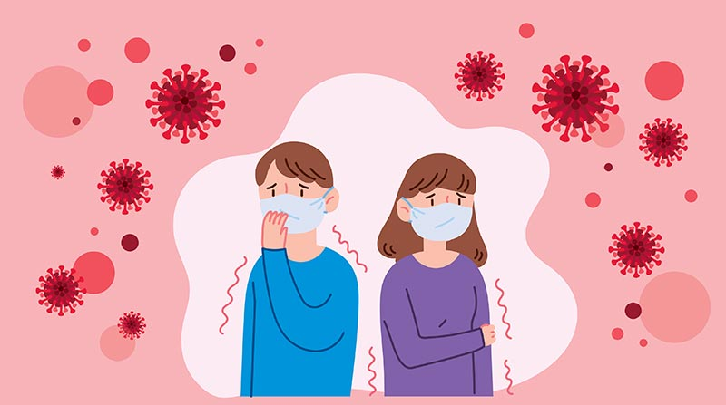
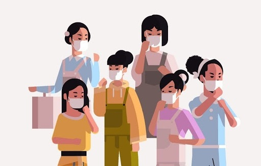
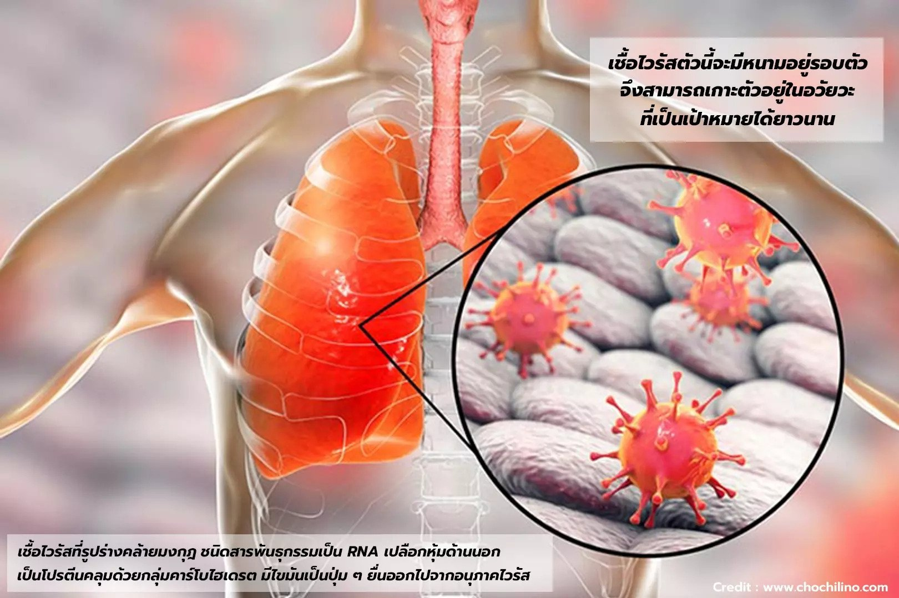
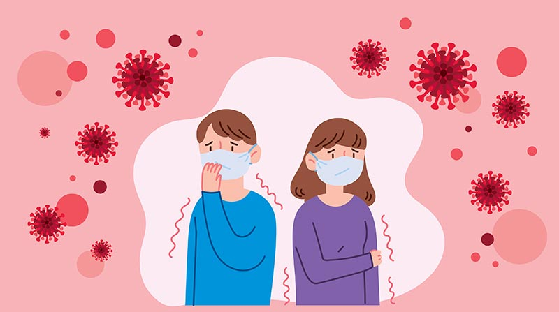
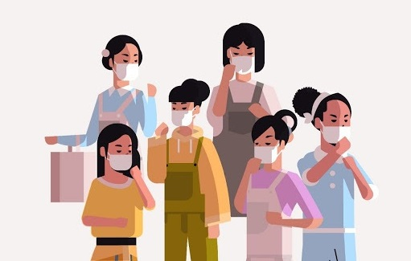

อาการเมื่อติดเชื้อ COVID-19
1.มีไข้
2.ไอแห้ง ๆ
3.หายใจลำบาก เหนื่อยหอบ อ่อนเพลีย
4.ปวดเมื่อยกล้ามเนื้อ
5.ถ่ายเหลวท้องเสีย
6.จมูกไม่ได้กลิ่น
7.ลิ้นไม่รับรส
8.บางรายมีภาวะแทรกซ้อน เช่น ปอดอักเสบ
เรียกอีกชื่อหนึ่งว่า ไวรัสโคโรนา (Coronavirus) เป็นไวรัสที่ถูกพบครั้งแรกในปี 1960 แต่ยังไม่ทราบแหล่งที่มาอย่างชัดเจนว่ามาจากที่ใด จัดเป็นเชื้อไวรัสตระกูลใหญ่ที่มีอยู่หลายสายพันธุ์ โดยชื่อโคโรนาก็มีที่มาจากลักษณะของเชื้อไวรัสที่รูปร่างคล้ายมงกุฎ (Corona เป็นภาษาละตินที่แปลว่ามงกุฎ) เนื่องจากเชื้อไวรัสชนิดนี้มีสารพันธุกรรมเป็น RNA มีเปลือกหุ้มด้านนอกที่ประกอบไปด้วยโปรตีนคลุมด้วยกลุ่มคาร์โบไฮเดรต ไขมันเป็นปุ่ม ๆ ยื่นออกไปจากอนุภาคไวรัส เปรียบเสมือนว่าเป็นเชื้อไวรัสที่มีหนามอยู่รอบตัว จึงสามารถเกาะตัวอยู่ในอวัยวะที่เป็นเป้าหมายของเชื้อไวรัสได้ โคโรนาไวรัสเป็นเชื้อที่ก่อโรคได้ทั้งในคนและสัตว์ เนื่องจากตัวไวรัสมีสารพันธุกรรม RNA ซึ่งมีโอกาสกลายพันธุ์สูง สามารถติดเชื้อข้ามสปีชีส์กันได้ โดยเฉพาะในสถานที่ที่มีการรวมตัวของสัตว์อย่างหนาแน่น เช่น ตลาดค้าสัตว์ เป็นต้น ดังนั้นต้นตอการแพร่ระบาดของโรคก็อาจจะมาจากสัตว์ปีก เช่น นก ค้างคาว ไก่ หรือสัตว์เลี้ยงลูกด้วยนม เช่น ม้า วัว แมว สุนัข กระต่าย หนู อูฐ รวมไปถึงสัตว์เลื้อยคลานอย่างงู เป็นต้น
แท้ที่จริงแล้วสามารถพบโคโรนาไวรัสกันอยู่เนือง ๆ เพราะโคโรนาไวรัสมีอยู่หลายสายพันธุ์ แต่ส่วนใหญ่จะไม่ก่อให้เกิดโรครุนแรง เป็นเพียงไข้หวัดธรรมดา แต่ก็มีโคโรนาไวรัสบางสายพันธุ์ที่ก่ออาการรุนแรงจนถึงขั้นปอดอักเสบได้ เช่น โรคซาร์ส ที่มีสาเหตุมาจากโคโรนาไวรัสสายพันธุ์ SARS-CoV ข้ามสปีชีส์จากค้างคาวมาสู่ตัวชะมด แล้วมาติดเชื้อในคน และโรคเมอร์ส ที่มีสาเหตุมาจากโคโรนาไวรัสสายพันธุ์ MERS-CoV ข้ามสปีชีส์จากค้างคาวสู่อูฐ และมาติดเชื้อในคน และล่าสุดกับเชื้อโคโรนาไวรัสสายพันธุ์ที่ก่อโรค COVID-19 มีชื่ออย่างเป็นทางการว่า SARS-CoV-2 เป็นเชื้อไวรัสลำดับที่ 7 ในตระกูล coronaviruses lineage B จีนัส beta coronavirus ที่ก่อให้เกิดโรคในคน
จากการศึกษาทางพันธุกรรมของไวรัส และการเรียงลำดับของรหัสแต่ละตัวทำให้พบต้นตอของเชื้อ SARS-CoV-2 ว่า ไวรัสสายพันธุ์ชนิดนี้มีจำนวนนิวคลีโอไทด์ที่เหมือนกันถึงร้อยละ 89.1 ของเชื้อ SARS-like coronaviruses ในค้างคาวที่เคยพบในประเทศจีน และในภายหลังก็มีข้อมูลที่ยืนยันว่า ต้นตอของโคโรนาไวรัสสายพันธุ์ใหม่ 2019 เกิดจากการผสมสารพันธุกรรมระหว่างโคโรนาไวรัสของค้างคาวกับโคโรนาไวรัสในงูเห่า กลายพันธุ์เป็นโคโรนาไวรัส สายพันธุ์ SARS-CoV-2 ที่แพร่เชื้อจากงูเห่ามายังคนได้
กรมควบคุมโรคให้ข้อมูลไว้ว่า มีเพียง 15-20% ที่เชื้อลงปอดแล้วทำให้เป็นปอดอักเสบ แต่เมื่อลงปอดไปแล้วจะก่อความรุนแรงแค่ไหน ขึ้นอยู่กับภูมิต้านทานร่างกายของแต่ละคน ขณะที่ข้อมูลผู้ติดเชื้อในประเทศจีนพบว่า การลงปอดมักเกิดขึ้นในสัปดาห์ที่สองหลังจากได้รับเชื้อแล้วแต่มีผู้ติดเชื้อประมาณ 80% ที่เชื้อไม่ลงปอด เป็นเพียงไข้หวัดธรรมดา ทั้งนี้ กรณีเชื้อไวรัสลงปอดจะเกิดขึ้นเมื่อเชื้อไวรัสเข้าสู่ร่างกายแล้วจะแบ่งตัวและเจริญเติบโตในเซลล์มนุษย์ เช่น เซลล์ของเยื่อบุหลอดลม จึงจะก่อโรคได้ และเซลล์มนุษย์ที่ติดเชื้อจะเพิ่มจำนวนและปล่อยเชื้อไวรัสออกมานอกเซลล์ เพื่อไปก่อโรคในเซลล์ข้างเคียง เมื่อเชื้อไวรัสเพิ่มมากขึ้นเรื่อย ๆ จะทำลายเซลล์มนุษย์ในหลอดลม ถุงลม และเนื้อปอด รวมทั้งเซลล์ข้างเคียงด้วย หากภูมิคุ้มกันของร่างกายไม่แข็งแรงพอ หรือสร้างภูมิต้านทานขึ้นมาช้า เพราะเม็ดเลือดขาวเพิ่งพบกับเชื้อไวรัสเป็นครั้งแรก ทำให้ภูมิต้านทานทำลายเชื้อไม่ทัน ผู้ป่วยจะมีอาการปอดอักเสบ และเมื่อเซลล์ที่ติดเชื้อจำนวนมากตาย จะถูกทดแทนด้วยพังผืดในเวลา 2-3 สัปดาห์หลังการเจ็บป่วย อย่างไรก็ตาม มีข้อมูลว่า ผู้ป่วยที่มีอาการปอดอักเสบส่วนใหญ่ เนื้อปอดจะถูกทำลายไปราว 20% ซึ่งหากเนื้อปอดถูกทำลายไม่ถึง 50% ร่างกายฟื้นฟูเองได้ตามสภาพแต่ละคน ทว่าจะมีผู้ป่วยราว 5% ที่เนื้อปอดถูกทำลาย 70-80% กรณีนี้ถือว่า วิกฤต ร่างกายอาจฟื้นตัวไม่ไหว หรือแพทย์อาจต้องใช้เครื่อง ECMO หรือเครื่องหัวใจ-ปอดเทียมแบบเคลื่อนย้าย มาทำงานแทนหัวใจและปอดของผู้ป่วย ซึ่งหากช่วยไม่ไหว สุดท้ายแล้วระบบหายใจจะล้มเหลวและเป็นเหตุให้ผู้ติดเชื้อโคโรนาไวรัสเสียชีวิต
โดยทั่วไปแล้ว หากเป็นคนที่มีภูมิต้านทานแข็งแรง ไม่มีโรคประจำตัว ไม่มีปัญหาที่ปอด ส่วนใหญ่จะสามารถทนต่อการก่อโรคของเชื้อโคโรนาไวรัสที่ค่อย ๆ เพิ่มจำนวนขึ้น พร้อมกันนั้นภูมิคุ้มกันของร่างกายก็จะพยายามต่อสู้กับเชื้อไวรัสได้ทันกาล ก่อนที่ปอดจะเสียหายหนักแต่สำหรับคนที่มีภูมิต้านทานไม่แข็งแรง เช่น ผู้สูงอายุ ผู้ที่มีโรคประจำตัว ผู้ที่ได้รับยากดภูมิคุ้มกัน ทำให้ร่างกายผลิตเซลล์เม็ดเลือดขาวมาสู้โรคได้ไม่ทัน หรือผู้ที่มีโรคปอดเรื้อรังอยู่แล้ว รวมทั้งคนที่สูบบุหรี่บ่อย ๆ ก็อาจทำให้ปอดติดเชื้ออย่างรุนแรงและรวดเร็วขึ้น
ข้อมูลจาก ศ. นพ.ธีระรัฒน์ เหมะจุฑา เผยว่า เชื้อโคโรนาไวรัสจะมีชีวิตอยู่ได้ที่อุณหภูมิประมาณ 20-40 องศาเซลเซียส โดยสามารถอยู่บนพื้นผิวได้นานถึง 20 วัน ในสภาพอากาศเย็น และในสภาพอากาศร้อน เชื้อไวรัสจะอยู่ได้ 3-9 วัน ขณะที่เพจ Infectious ง่ายนิดเดียวให้ข้อมูลเพิ่มเติมว่า จากการศึกษาไวรัสที่มีลักษณะคล้ายกัน พบว่าสามารถอยู่บนพื้นผิวโลหะ แก้ว ไม้ หรือพลาสติก ประมาณ 4-5 วัน ณ อุณหภูมิห้อง แต่ในสภาพภูมิอากาศประมาณ 4 องศาเซลเซียส เชื้อจะอยู่ได้ราว ๆ 28 วัน ในกรณีอุณหภูมิมากกว่า 30 องศาเซลเซียส อายุเชื้อไวรัสจะสั้นลง และในสภาพความชื้นที่มากกว่า 50% เชื้อไวรัสจะอยู่ได้นานกว่าสภาพความชื้นที่ 30%
เชื้อไวรัสตัวนี้ไม่ทนความร้อน ดังนั้นแค่เจออุณหภูมิ 70 องศาเซลเซียส ก็ทำให้เชื้อตายได้ นอกจากนี้เชื้อไวรัสตัวนี้ยังจะตายได้ง่าย ๆ ด้วยแอลกอฮอล์ที่ความเข้มข้น 70% และการทำความสะอาดด้วยสบู่อย่างเหมาะสม กล่าวคือ ล้างมือด้วยสบู่เป็นระยะเวลา 15-30 วินาที รวมไปถึงสารลดแรงตึงผิวต่าง ๆ เช่น ผงซักฟอก สารฟอกขาว (Sodium hypochlorite) ที่ความเข้มข้น 0.1-0.5% โพวิโด ไอโอดีน 1% หรือไฮโดรเจน เปอร์ออกไซด์ 0.5-7.0% เป็นต้น โคโรนาไวรัสจะไม่ทน เพราะไวรัสชนิดนี้มีไขมันหุ้มอยู่ด้านนอก ดังนั้น หากใช้สารลดแรงตึงผิวทำลายไขมันที่หุ้มอยู่ได้ ก็จะฆ่าไวรัสได้
รหัสไวรัส: S โควิดสายพันธุ์ S (Serine) หรือ สายพันธุ์อู่ฮั่น เป็นสายพันธุ์ดั้งเดิมที่พบครั้งแรกที่เมืองอู่ฮั่น ประเทศจีน โดยระบาดระลอกแรกในไทยเดือนมีนาคม 2563 จากคลัสเตอร์สนามมวยที่ลุมพินี ราชดำเนิน และอ้อมน้อย
อาการเบื้องต้นของโควิดสายพันธุ์ S
รหัสไวรัส: B.1.1.7 โควิดสายพันธุ์อัลฟ่า หรือ สายพันธุ์อังกฤษ พบครั้งแรกที่เมืองเคนต์ในประเทศอังกฤษเมื่อวันที่ 20 กันยายน 2563 ก่อนจะเข้ามาระบาดในประเทศไทยเมื่อต้นเดือนมกราคม 2564 และแพร่ระบาดอย่างหนักจากคลัสเตอร์ทองหล่อ ปัจจุบันเป็นสายพันธ์ุหลักที่ระบาดไปแล้วกว่า 138 ประเทศทั่วโลก เนื่องจากสายพันธุ์นี้แพร่กระจายเชื้อได้ง่ายกว่าสายพันธุ์อื่นมากถึง 40-70% และยังเลี่ยงภูมิคุ้มกันได้ดี ทำให้มีอัตราการเจ็บป่วยและเสียชีวิตสูงขึ้นถึง 30%
อาการเบื้องต้นของโควิดสายพันธุ์อัลฟ่า
รหัสไวรัส: 501Y.V2 หรือ B.1.351 โควิดสายพันธุ์เบต้า หรือ สายพันธุ์แอฟริกา พบครั้งแรกในอ่าวเนลสันแมนเดลา เมืองอีสเทิร์นเคปของแอฟริกาใต้เมื่อเดือนตุลาคม 2563 พบครั้งแรกในไทยที่ อ.ตากใบ จ.นราธิวาส เมื่อวันที่ 9 มิถุนายน 2564 สำหรับสายพันธุ์เบต้าพบว่ามีอัตราการแพร่เชื้อไวขึ้น 50% จากสายพันธุ์เดิม อีกทั้งมีการกลายพันธุ์ในตำแหน่งสำคัญ จึงทำให้เชื้อไวรัสมีความสามารถในการหลบหลีกภูมิคุ้มกันที่ร่างกายสร้างขึ้น ดังนั้น ผู้ที่มีภูมิคุ้มกันหรือเคยติดเชื้อแล้วก็จะยังสามารถติดเชื้อโควิด-19 สายพันธุ์นี้ซ้ำได้อีก
อาการเบื้องต้นของโควิดสายพันธุ์เบต้า
รหัสไวรัส: B.1.617.1 หรือ B.1.617.2 โควิดสายพันธุ์เดลต้า หรือ สายพันธุ์อินเดีย เป็นสายพันธุ์ที่พบในประเทศอินเดีย ก่อนจะมีการกระจายไปในหลายประเทศทั่วโลก โดยสายพันธุ์นี้สามารถจับเซลล์ของมนุษย์ได้ง่ายขึ้น ติดง่ายขึ้น แพร่กระจายเชื้อได้รวดเร็วกว่า จึงระบาดเร็ว โดยในประเทศไทยพบครั้งแรกที่คลัสเตอร์แคมป์คนงานหลักสี่ และเป็นสายพันธ์ุหลักที่กำลังแพร่ระบาดรุนแรงในบ้านเราอยู่ขณะนี้ นอกจากนี้ ยังพบว่าโควิด-19 สายพันธุ์เดลต้าสามารถกลายพันธุ์เป็นสายพันธุ์เดลต้า พลัส ซึ่งทำให้ผู้ที่สัมผัสเชื้อติดเชื้อง่ายกว่าเดิม ทั้งยังหลบเลี่ยงภูมิคุ้มกันจากวัคซีนได้ดี
อาการเบื้องต้นของโควิดสายพันธุ์เดลต้า
รหัสไวรัส: B.1.1.529 โอไมครอน หรือ โอมิครอน คือ โควิดกลายพันธุ์สายพันธุ์ล่าสุดที่องค์การอนามัยโลก (WHO) ประกาศให้เป็นสายพันธุ์ระดับที่น่ากังวล (Variants of Concern: VOC) ถูกค้นพบครั้งแรกในแถบแอฟริกาใต้ในช่วงสิ้นปี 2564 ที่ผ่านมา ปัจจุบันมีกระจายไปหลายประเทศ รวมถึงประเทศไทยที่มีอัตราการระบาดค่อนข้างรวดเร็วหลังพบผู้ติดเชื้อชาวอเมริกันที่บินจากสเปน แวะดูไบ ก่อนเข้าไทยเมื่อวันที่ 30 พฤศจิกายน 2564 โดยสายพันธุ์นี้มีการกลายพันธุ์ส่วนโปรตีนหนามมากถึง 32 ตำแหน่ง ทำให้สามารถหลบหลีกภูมิต้านทานได้มากขึ้น เข้าสู่ร่างกายได้ง่ายขึ้น ส่งผลต่อการลดประสิทธิภาพของวัคซีนที่มีอยู่ปัจจุบันอย่างมาก และมีความเสี่ยงที่จะทำให้เกิดการกลับมาติดเชื้อซ้ำเพิ่มขึ้น แต่ผู้ป่วยมักติดเชื้อในลักษณะที่เป็นระบบทางเดินหายใจส่วนบน ไม่ลงปอด จึงทำให้มีอาการป่วยไม่รุนแรงมาก
อาการเบื้องต้นของโควิดสายพันธุ์โอไมครอน หรือ โอมิครอน
รหัสไวรัส: BA.2 สายพันธุ์โอไมครอน หรือ โอมิครอน BA.2 จัดเป็นหนึ่งในสายพันธุ์โควิดใหม่ล่าสุดที่มาเร็วและมาแรงที่สุด แต่มีอาการแสดงน้อยคล้ายอาการของคนเป็นหวัด หรือแทบจะไม่มีอาการเลยในบางราย จนได้รับการขนานนามว่าเป็น ‘สายพันธุ์ล่องหน’ (Stealth Variant) ที่สำคัญคือโอมิครอน BA.2 นั้นมีความสามารถในการหลบภูมิคุ้มกันได้สูงกว่าสายพันธุ์อื่น ๆ ก่อนหน้า ซึ่งหมายความว่าแม้ผู้ป่วยจะได้รับวัคซีนป้องกันโควิดไปแล้วกี่เข็มก็ตาม แต่ก็ยังมีโอกาสที่จะติดเชื้อโอมิครอน BA.2 ได้ในเวลาอันรวดเร็ว
อาการเบื้องต้นของโควิดสายพันธุ์โอไมครอน หรือ โอมิครอน – B.2
รหัสไวรัส: BA.2.75 สำหรับโอไมครอน หรือ โอมิครอน สายพันธุ์ย่อย BA.2.75 มีการกลายพันธุ์เพิ่มขึ้น 9 ตำแหน่งจาก สายพันธุ์ย่อย BA.2 ในจำนวนนี้มี 2 ตำแหน่งสำคัญที่อาจทำให้เกิดการหลบภูมิคุ้มกัน ทำให้ติดเชื้อง่ายขึ้น และทำให้ไวรัสจับกับเซลล์ปอดและรับเชื้อเข้าสู่ร่างกายได้ดีขึ้น เพิ่มโอกาสในการแพร่กระจายเชื้อ พบครั้งแรกในต่างประเทศตั้งแต่เดือนมกราคม 2565 แต่มีการแพร่ระบาดอย่างรวดเร็วในอินเดียในช่วงเดือนมิถุนายน 2565 ที่ผ่านมา และได้กระจายไปหลายประเทศ เช่น สหราชอาณาจักร เดนมาร์ก ฝรั่งเศส อิตาลี สำหรับในประเทศไทย มีการตรวจพบผู้ติดเชื้อโควิด-19 สายพันธุ์ย่อย BA.2.75 รายแรกที่ จ.ตรัง โดยองค์การอนามัยโลกได้จัดสายพันธุ์ย่อย BA.2.75 ให้อยู่ในกลุ่มสายพันธ์ที่น่ากังวลที่ต้องจับตาดู (VOC-LUM)
อาการเบื้องต้นของโควิดสายพันธุ์โอไมครอน หรือ โอมิครอน – BA.2.75
รหัสไวรัส: BA.4/BA.5 โควิดสายพันธุ์ย่อย BA.4/BA.5 เป็นเชื้อกลายพันธุ์ของโควิดสายพันธุ์โอไมครอน หรือ โอมิครอนที่พบการแพร่ระบาดไปก่อนหน้านี้ โดยมีการพบผู้ติดเชื้อรายแรกในแถบแอฟริกาเมื่อช่วงเดือนมกราคม 2565 ในปัจจุบันพบผู้ป่วยติดเชื้อโควิดสายพันธุ์นี้เพิ่มขึ้นอย่างรวดเร็วทั่วโลกจนองค์กรอนามัยโลกได้ประกาศให้สายพันธุ์ BA.4/BA.5 เป็นสายพันธุ์ย่อยที่ต้องเฝ้าระวัง (VOC) และคาดว่าจะกลายเป็นสายพันธุ์หลักของการแพร่ระบาดทั่วโลก เนื่องจากสายพันธุ์นี้มีการกลายพันธุ์ในตำแหน่ง L452R ซึ่งเป็นตำแหน่งเดียวกันกับสายพันธุ์เดลต้า (Delta) กล่าวคือเชื้อไวรัสมีความสามารถในการแบ่งตัวเพิ่มจำนวนในเซลล์ปอดได้ดี ซึ่งอาจก่อให้เกิดอาการปอดอักเสบในผู้ติดเชื้อ แตกต่างจากสายพันธุ์ BA.1/ BA.2 ที่เชื้อมีความสามารถในการแบ่งตัวได้ดีในเซลล์ของเยื่อบุระบบทางเดินหายใจส่วนบน โดย BA.5 จัดเป็นสายพันธุ์ที่แพร่กระจายได้เร็วที่สุด โดยแพร่ได้เร็วกว่าไวรัสอู่ฮั่น 5 เท่า และแพร่ได้เร็วกว่าเดลต้า 3.6 เท่า
อาการเบื้องต้นของโควิดสายพันธุ์โอไมครอน หรือ โอมิครอน – BA.4/BA.5
รหัสไวรัส: BA.4.6 BA.4.6 เป็นอีกหนึ่งสายพันธุ์ย่อยของโควิดโอไมครอน หรือ โอมิครอน พบการระบาดอย่างกว้างขวางในสหรัฐอเมริกา โดยแฉพาะในแถบ 4 มลรัฐ คือ ไอโอวา (Iowa) แคนซัส (Kansas) มิสซูรี (Missouri) และเนบราสกา (Nebraska) และอีก 43 ประเทศทั่วโลก โดยมีอัตราการเติบโตแพร่ระบาด (Relative Growth Advantage) สูงกว่า BA.4/BA.5 และ BA.2.75 ทำให้ศูนย์ควบคุมโรคติดต่อสหรัฐอเมริกา ( U.S. CDC) ปรับให้โอไมครอนสายพันธุ์ย่อย BA.4.6 เป็นสายพันธุ์ที่น่ากังวล (Variant of Concern) เนื่องจากมีการระบาดเพิ่มขึ้นอย่างรวดเร็ว กลายพันธุ์ต่างไปจากสายพันธุ์ดั้งเดิมอู่ฮั่นประมาณ 83 ตำแหน่ง ในขณะที่ BA.2.75 กลายพันธุ์ไป 95 ตำแหน่ง, BA.5 กลายพันธุ์ไป 90 ตำแหน่ง, และ BA.4 กลายพันธุ์ไป 78 ตำแหน่งต่างจากไวรัสดั้งเดิมอู่ฮั่น ซึ่งตำแหน่งกลายพันธุ์คล้ายเดลต้า และเบต้าบางส่วน ขณะที่ในประเทศไทยยังไม่พบผู้ป่วยสายพันธุ์นี้ อย่างไรก็ตาม คงจะต้องติดตามอย่างใกล้ชิดกันต่อไปว่าไวรัสสายพันธุ์ใหม่ BA.4.6 จะมีความสามารถในการแพร่กระจาย ก่อโรครุนแรง ลดภูมิต้านทาน และดื้อต่อวัคซีนมากน้อยเพียงใด หากมีการเปลี่ยนแปลงสารพันธุกรรมมาก ก็อาจเป็นไปได้ว่าจะส่งผลต่อประสิทธิภาพของวัคซีนเจนเนอเรชั่นที่ 2 อย่างแน่นอน
1.มีไข้
2.ไอแห้ง ๆ
3.หายใจลำบาก เหนื่อยหอบ อ่อนเพลีย
4.ปวดเมื่อยกล้ามเนื้อ
5.ถ่ายเหลวท้องเสีย
6.จมูกไม่ได้กลิ่น
7.ลิ้นไม่รับรส
8.บางรายมีภาวะแทรกซ้อน เช่น ปอดอักเสบ
